Accessibility Design — Redesigning the U of T MI Website
Redesigning the U of T Master of Information website to eliminate invisible cognitive friction and screen-reader confusion beyond basic AODA/WCAG compliance, delivering a seamless, inclusive experience.
The iSchool website meets AODA and WCAG standards, but users still find it hard to navigate and not fully inclusive.
Compliance confirmed that the required features existed. It did not confirm that the experience of using them worked. Two invisible barriers sat underneath the audit.
1. The Screen-Reader Trap
Heading order breaks (e.g., H2 → H6)
Too many headings (38 total)
Similar labels + scattered sections
Decorative shapes disrupt flow
Result: Screen-reader effort increases
The screen reader’s heading list: the hierarchy jumps from H2 to H6, breaking the page’s announced structure.
2. Sensory Overload
Bright colours overpower text
Colours add no meaning
Some low-contrast pairs
Dense visuals hard to scan
→ Result: Users lose focus easily
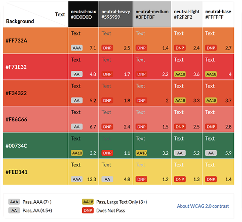
WCAG contrast grid: several colour pairings fall below the AA threshold.
Research
Card Sorting
Methodology
Open card-sorting study
Goal
Fix the fragmented IA and confusing heading hierarchy.
Participants Recruitment
7 Master of Information (MI) students.
Understood the academic content but rarely used the official website.
Procedure
Setup: Shuffled existing site content into randomized cards.
Task: Participants conducted an open card sort, grouping items and defining custom category labels.
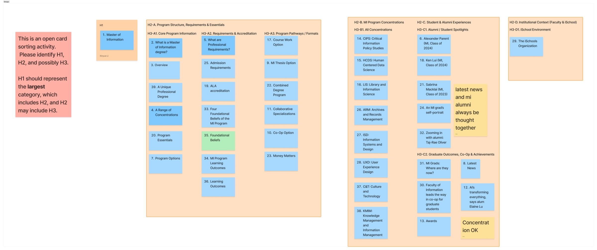
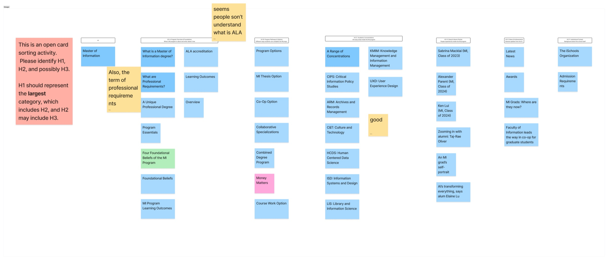
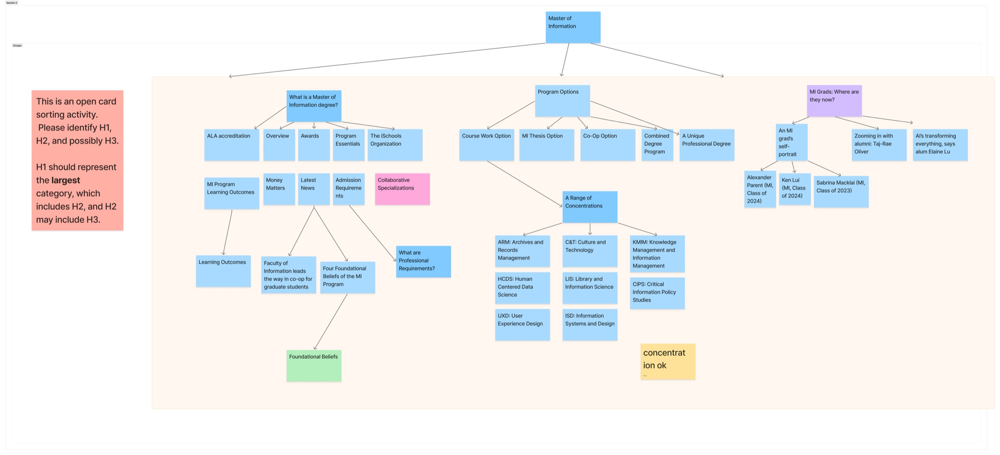
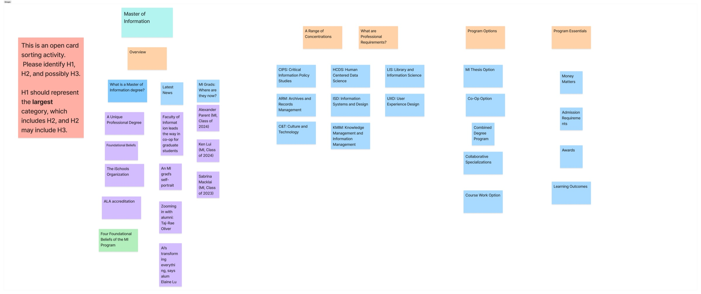
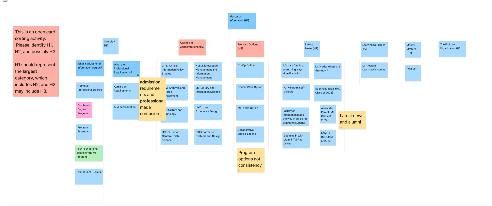
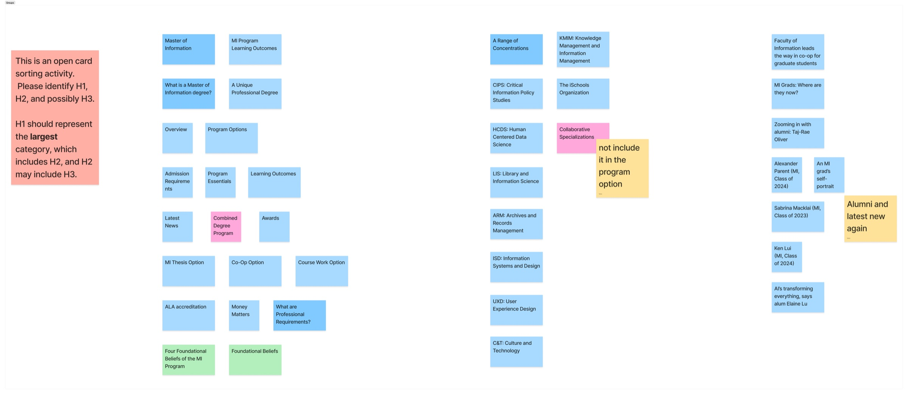
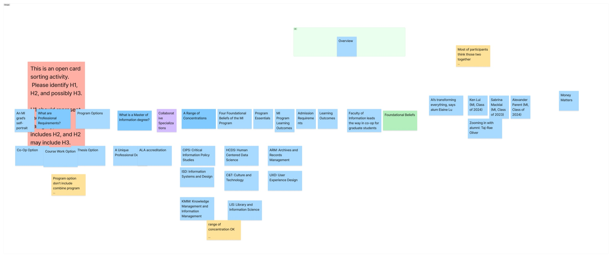
1 / 7
Qualitative Analysis
After collecting the sorting results, I organized the data and looked for early patterns. I mainly examined:
How participants grouped certain cards together, and how they labeled their groups
Which terms caused confusion and why
Which items they saw as more important or less important
What didn’t work
Terminology Issues
“Admission requirements” vs. “Professional requirements” confused participants because one is for applicants and one is for current students.
Terms like ALA were unfamiliar and hard to place.
Label & Naming Inconsistency
Program option labels were inconsistent (some included “option,” others didn’t).
The Overview category felt disorganized.
Information Structure Mismatch
Most participants grouped latest news and alumni news together.
The Four Fundamental Beliefs were placed under H3/H4 by most participants, not at H2 like the original site.
What worked
Clear and Successful Label
No one miscategorized range of concentration, likely because the formatting and naming were consistent.
IA Redesign
Based on the data, I created a new sitemap that follows how users naturally group the content. This revised structure became an important reference for our design decisions.
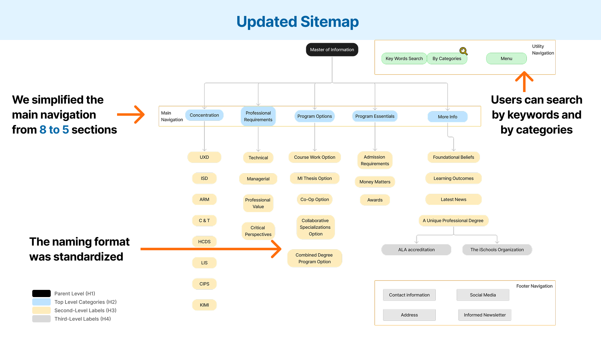
Design
Site Navigation and Structure
1. Add new search bar
Added a search bar supporting both keywords and categories, giving users a fast shortcut to key info without having to dig through multi-layer menus.
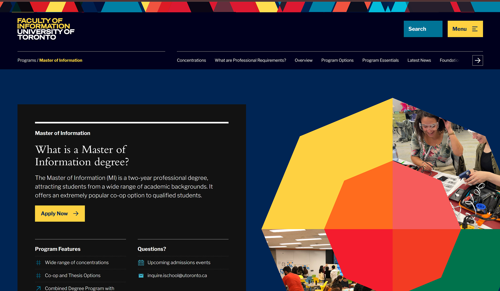
Old website
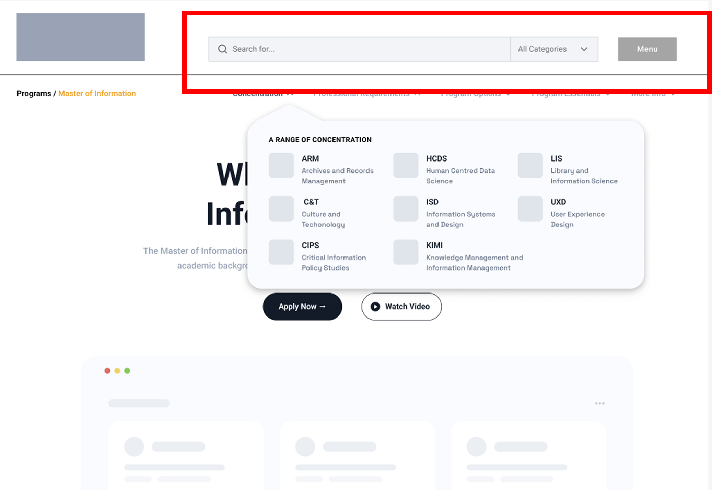
New search bar
2. Improving Navigation with Clear Information
We simplified the navigation system to make it easier for users to find what they need and feel more confident while browsing.
Streamlined top-level navigation from 8 to 5 core categories via open card sorting.
Implemented immediate-disclosure dropdowns.
Standardized labels to resolve terminology confusion(e.g., clearly separating applicant “Admission Requirements” from current-student “Professional Requirements”).
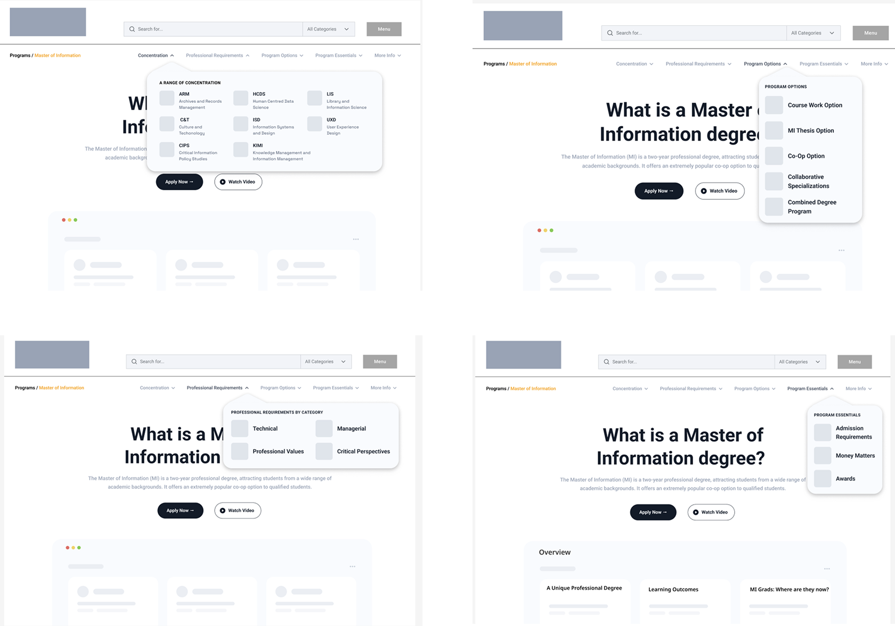
Updated navigation bar with immediate-disclosure dropdowns.
3. Simplifying Layout with Easy Interaction
Added expand/collapse buttons to break dense text into bite-sized pieces.
User Control: Reduce unnecessary scrolling and help prevent cognitive overload.
ADHD-Friendly: Keeps the screen calm and focused to prevent cognitive overload.
Enhancing Accessibility: Support screen-reader navigation and keyboard navigation.
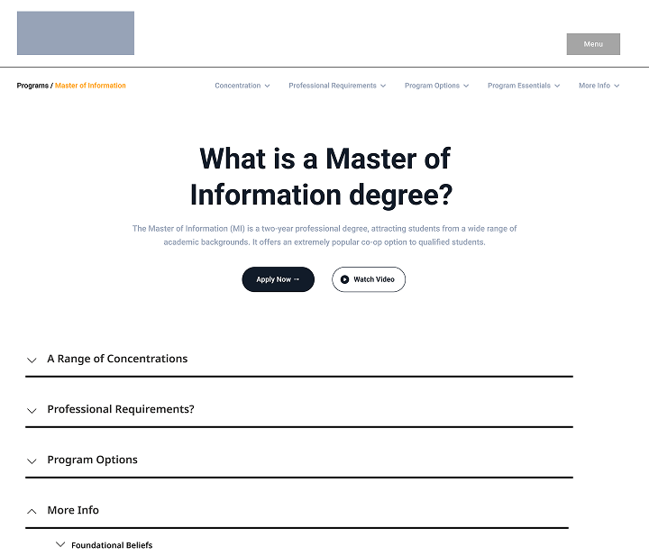
Collapsed navigation
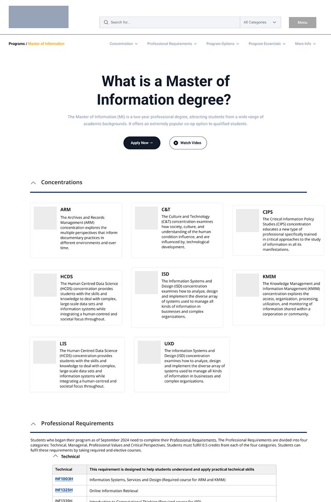
Expanded navigation
Colour System
Problems in original colour usage
Overly bright decorative colours dominate the page
Colours do not communicate meaning (purely decorative)
Several colour–text pairs fail WCAG contrast ratios
Visual saturation creates cognitive overload
Users with colour sensitivity find the page hard to scan
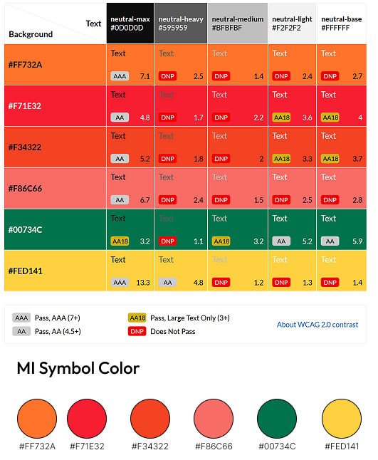
Users lose focus, key program info becomes harder to find.